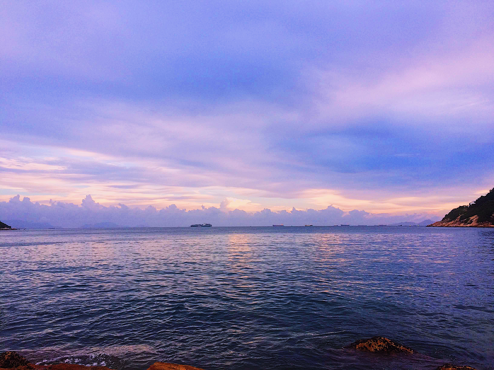

the gallery walk
the digital museum

sakshi harjani
purple skies
stanley bay, hong kong
july 8, 2018
the photographer captured this because she felt peace and calm in this location. the serenity caused by the still water was something she wanted to remember. she loved the open space in front of her and how the only thing that can be seen in this environment captured is the horizon and one lone ship.